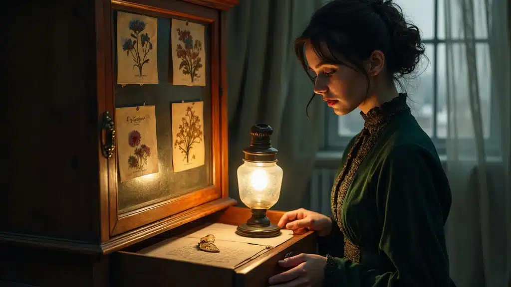
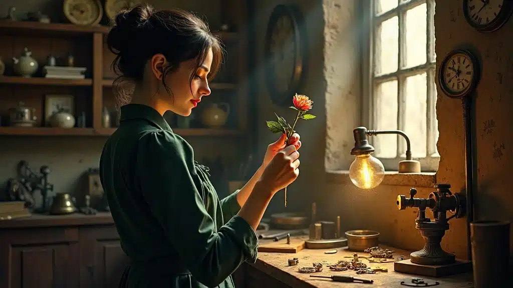
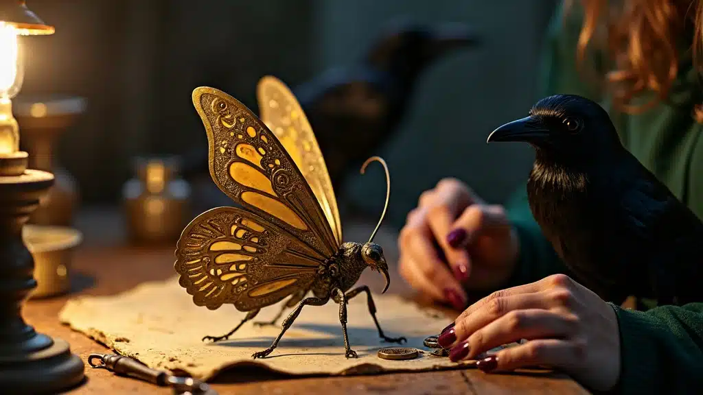
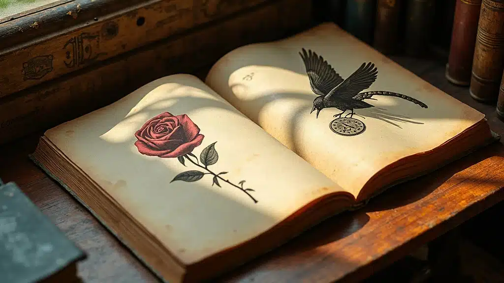

The Clockwork Herbarium: A Short Story
Updated 2026-11-15
The story behind our Clockwork Herbarium series. About a nine-minute read.
The story has a shop behind it. The natural history collection and the dark academia collection carry brass specimens, field-journal prints and engraved curiosities — the same world, on a shirt or a wall.
I. The Rot

The first thing Eleanor Vane noticed, the winter her father died, was the smell.
It came from the long cabinet in the back study, the one with forty shallow drawers and brass handles worn pale by thirty years of his thumb. Inside lay Professor Augustus Vane’s life’s work: two thousand pressed specimens, each mounted on cream card, each labelled in his small, slanted hand. Roses from Kew. Foxglove from the Welsh hills. A luna moth, pinned and spread, that a sea captain had carried home from Massachusetts in a cigar box.
By February the damp had found them.
She opened the drawers one by one with a lamp in her hand and watched brown spots bloom across petals that had kept their colour for decades. The moth’s wings had begun to powder. When she touched the edge of a rose, it came away on her fingertip like ash.
"Paper and pins," said the man from the Royal Society, when he came to look. He was kind about it, in the way people are kind about things they have already decided. "Nothing lasts, Miss Vane. The Society can take perhaps a dozen of the better sheets. The rest…" He made a small, regretful gesture at the fireplace.
She thanked him and showed him out. Then she went back to the study, closed the door, and sat for a long time with her father’s magnifying glass in her lap.
Eleanor was not a botanist. She had been her father’s illustrator, which meant she had spent fifteen years drawing what he found, line by line, with a copper-nib pen and an engraver’s patience. She knew every vein of every leaf in that cabinet better than he had.
And she knew one other thing, because the house on Gilbert Street had always ticked. Her mother’s family had been clockmakers.
II. The Workshop

Her grandfather’s tools were still in the attic, wrapped in oilcloth: files no thicker than a needle, a jeweller’s lathe, a set of steel punches for cutting gear teeth, a box of brass sheet so thin it rippled when she breathed on it.
She started with the rose.
It took her eleven days. She traced the pressed flower onto brass with a scribe, cut each petal with a piercing saw, and annealed the metal over a spirit lamp until it was soft enough to curve. She shaped the petals over the rounded end of a burnishing tool, the way her grandfather had once shaped the domed crystal of a pocket watch. The stem gave her trouble. Every wire she tried looked dead and straight. In the end she built it from gears instead, forty-one of them, each no wider than a fingernail, linked tooth to tooth so the stem could bend.
When it was finished, she held it up to the window. The light caught it the way the real rose must once have caught the light in a garden at Kew.
It was not alive. But it would not rot, either.
That night she found she could not stop. She took the half-collapsed rose’s original card, with her father’s handwriting on it, and in the empty space beneath the label she wrote in her own: Rebuilt in brass, March 1889. E.V.
Then she opened the second drawer.
III. The Moth

The luna moth was harder, because it needed to look as though it might lift off the page.
She spent a week on the wings alone. She pierced them in filigree, following the veins she had drawn so many times, and set a tiny escapement at the joint where the wings met the body, the same mechanism that lets a watch’s balance wheel swing. Wound with a key the size of a grain of rice, the wings opened and closed, once, slowly, like breathing. Then they stopped.
She sat back and laughed out loud for the first time since the funeral.
Word gets around a street like Gilbert Street. The fishmonger’s boy saw the light in her window at two in the morning and told his mother. His mother told the curate’s wife. By May, people were knocking on her door with things in their hands: a sprig of lavender from a wedding, a dried poppy from a son’s grave in Afghanistan, a child’s first pressed daisy. Can you make it last?
She could. Not all of them, and not quickly. But she could.
IV. The Raven
The raven arrived on its own.
It came through the open skylight one evening in June and sat on the edge of the workbench, black and sleek and entirely unafraid, watching her file the teeth of a gear. She assumed it would leave. It did not. It stayed through the night, and the next, and by the end of the month it had a perch by the lamp and an opinion about anything shiny.
It stole a balance spring the first week. Then a jewel bearing. Then, alarmingly, the key to the moth.
Eleanor stopped scolding it after she found where it put things. The raven had been laying each stolen piece, very carefully, on top of her father’s journal, as though it were guarding the book and paying a toll at the same time.
So she gave it a job. She built it a pocket watch, a big one, with the back cut away so every gear showed, and set it open on the journal. The raven took to standing on it. Visitors began to call it the Chronometer, and then simply the keeper of the book.
She never gave it a name. It never seemed to want one.
V. The Apothecary
Not everyone on Gilbert Street was pleased.
The vicar suggested that preserving the dead was not entirely Christian. A neighbour wrote to the newspaper about "unnatural brass flowers." And a doctor named Pell, who had treated her father in his last illness, came to the door to tell her, with great politeness, that she was wasting a good mind on toys.
"You should be making instruments," he said. "Things that heal."
Eleanor thought about that for a long time after he left.
Her father had spent his final year cataloguing medicinal plants, the beautiful, dangerous ones: nightshade, foxglove, henbane. Plants that could stop a heart or, in the right measure, steady one. He had believed the line between poison and medicine was mostly a matter of precision.
So she made the last specimen differently. She took one of her grandmother’s old apothecary bottles, wrapped its glass shoulders in brass nightshade and foxglove leaves, and inside it, where the tincture should have been, she built a tiny mechanism: a regulator, the part of a clock that keeps every other part honest. It did not do anything. It simply ran, steady and exact, behind the glass.
She sent it to Dr. Pell with a card. Precision, it read. As promised.
He did not reply. But years later, she heard he kept it on his desk.
VI. The Journal

By the autumn of 1891, the cabinet with forty drawers held no paper at all. Every specimen worth saving had been rebuilt, and beside each one lay its original card, her father’s label above, her own note below.
And there was the journal.
Eleanor had kept it from the start: every specimen drawn in ink before she cut a single piece of brass, every gear counted, every failure noted in the margin with a small, irritated cross. The engravings in it were the best work of her life. Where her father’s drawings had shown what a plant was, hers showed how it worked: stem and gear and petal and spring, all of it laid open like the back of a watch.
She called it The Clockwork Herbarium.
What happened to it afterwards is not entirely clear. Eleanor Vane married late, moved north, and left the house on Gilbert Street to a cousin who sold most of its contents at auction in 1903. The brass specimens scattered. One rose is said to have reached a collector in Vienna. The moth, without its key, was last recorded in a pawnshop ledger in Bristol.
The journal itself was never found.
Only a handful of loose pages survived, tucked inside an old ledger at the back of a bookseller’s shelf: four engravings, slightly foxed at the edges, each in the same patient copper-nib line. A rose with a stem of gears. A moth with wings of filigree. A raven standing guard on an open watch. A bottle of nightshade with a heart that keeps time.
Beneath the last one, in small slanted letters, someone had written a single line:
Nothing lasts. So build it again.
About this story
The Clockwork Herbarium is an original short story written for Steamgears. Eleanor, her father, the raven and Gilbert Street are fiction. The four surviving engravings inspired our Clockwork Herbarium series: the Clockwork Rose, the Brass Luna Moth, The Raven Chronometer and the Nightshade Apothecary, each available as a tee, an art print and a phone case.
Wear the engravings
Clockwork Rose — tee · art print · phone case
Brass Luna Moth — tee · art print · phone case
The Raven Chronometer — tee · art print · phone case
Nightshade Apothecary — tee · art print · phone case
All twelve are in the Gaslight collection.
If the twelve pieces are your first steampunk purchase, Start Here explains how they fit a costume.